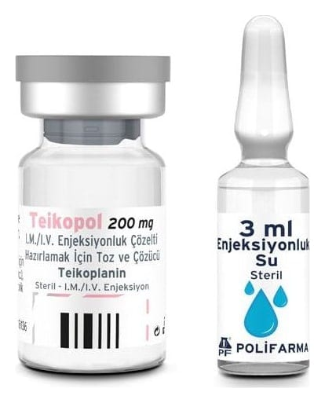

Teikopol 200 mg I.M./I.V. Enjeksiyonluk Çözelti Hazırlamak İçin Toz Ve Çözücüsü, 1 Flakon Ve 1 Ampul

Ne için kullanılır
KT · Bölüm 1 TEİKOPOL, kuru toz halinde teikoplanin isimli bir etkin madde içerir. TEİKOPOL, bakterilerin neden olduğu enfeksiyonların tedavisinde kullanılan bir antibiyotiktir. Bu enfeksiyonlar eklemlerinizde, kanınızda veya kemiklerinizde meydana gelebilir. TEİKOPOL damar içine veya kas içine enjekte edilerek kullanılır. Etkin maddenin kuru toz halinde yer aldığı 1 enjeksiyonluk flakon ve 3 mL enjeksiyonluk su içeren ampul aynı ambalaj içinde sunulmuştur.
Her bir çözücü ampul içinde 3 mL enjeksiyonluk su bulunur. Her bir TEİKOPOL 200 mg flakonu içinde 24 mg sodyum klorür bulunur. 2 dozaj şekli mevcuttur: TEİKOPOL 200 mg I.M./I.V. enjeksiyonluk çözelti hazırlamak için toz ve çözücüsü ve TEİKOPOL 400 mg I.M./I.V. enjeksiyonluk çözelti hazırlamak için toz ve çözücüsü. TEİKOPOL yetişkinlerde ve çocuklarda (yeni doğan bebekler dahil) vücüdun aşağıdaki bölümlerinde meydana gelen bakteriyel enfeksiyonların tedavisinde kullanılır: Bu ilacı kullanmaya başlamadan önce bu KULLANMA TALİMATINI dikkatlice okuyunuz, çünkü sizin için önemli bilgiler içermektedir. Bu kullanma talimatını saklayınız. Daha sonra tekrar okumaya ihtiyaç duyabilirsiniz. Eğer ilave sorularınız olursa, lütfen doktorunuza veya eczacınıza danışınız. Bu ilaç kişisel olarak sizin için reçete edilmiştir, başkalarına vermeyiniz. Bu ilacın kullanımı sırasında, doktora veya hastaneye gittiğinizde doktorunuza bu ilacı kullandığınızı söyleyiniz. Bu talimatta yazılanlara aynen uyunuz. İlaç hakkında size önerilen dozun dışında yüksek veya düşük doz kullanmayınız.
- Deri ve deri altı doku-bazen ‘yumuşak doku’ da denebilir - Akciğer - İdrar yolları - Eklem ve kemikler - Kalp - Endokardit olarak adlandırılan kalbin iç zarının veya kapakçıklarının iltihabı - Mide veya bağırsak: Hastalık peritonit olarak adlandırılır. Bu durum eğer böbrek problemleriniz varsa ve düzenli olarak diyalize giriyorsanız gerçekleşebilir. - Kan, yukarıda listelenen koşulların herhangi birinin sebep olması durumunda